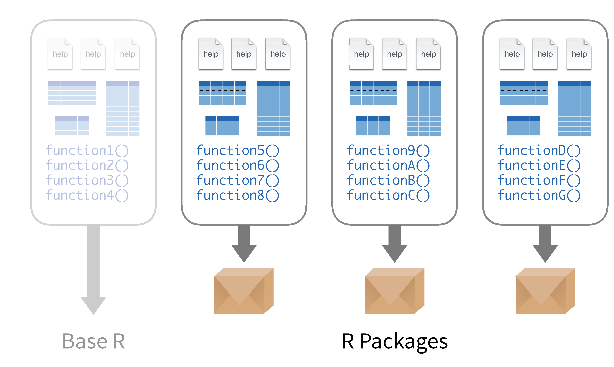
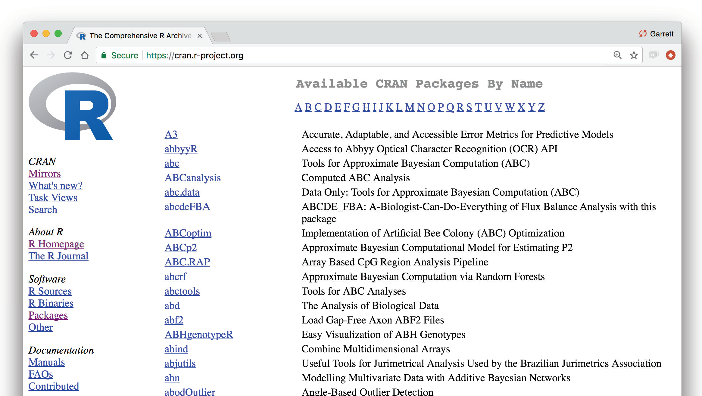
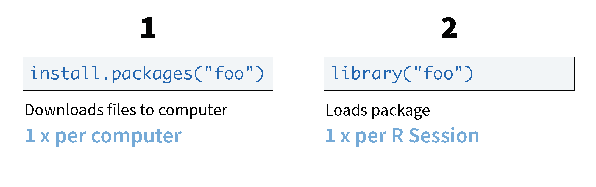
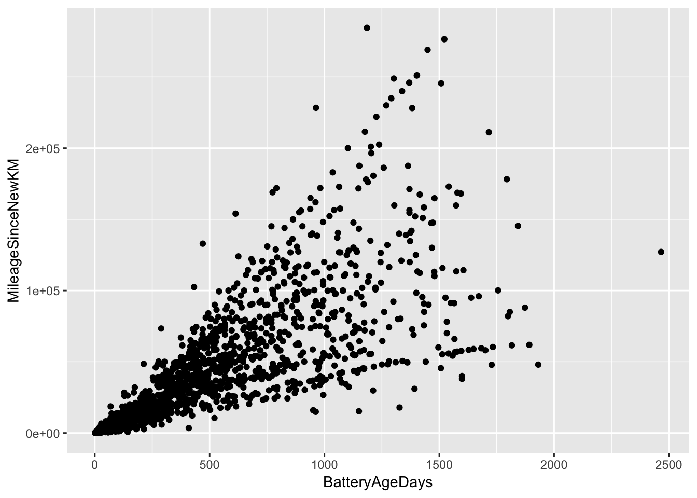
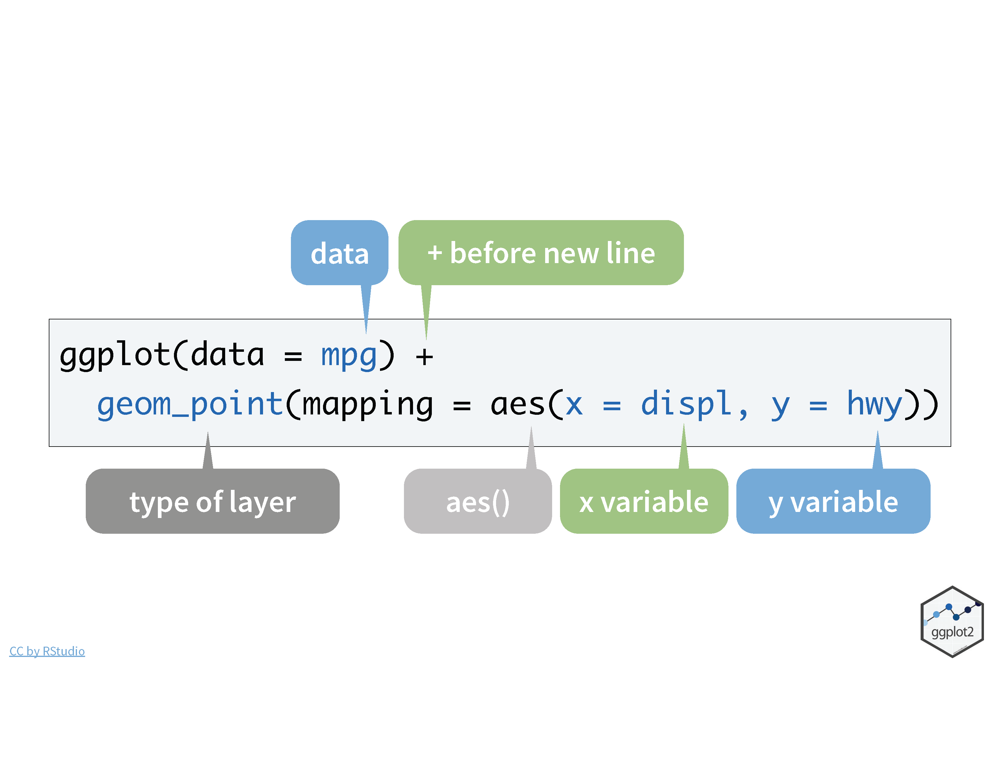
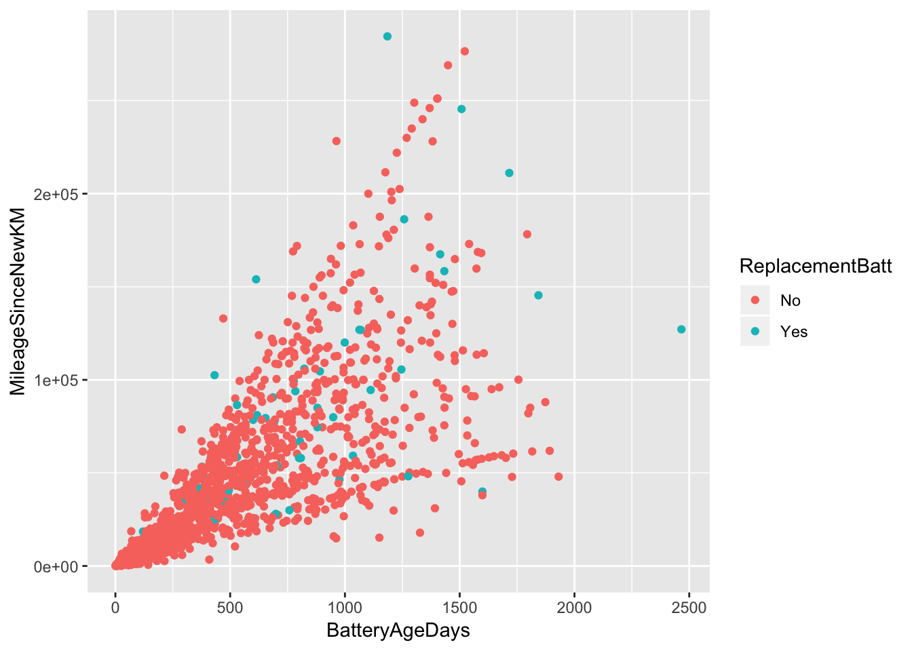
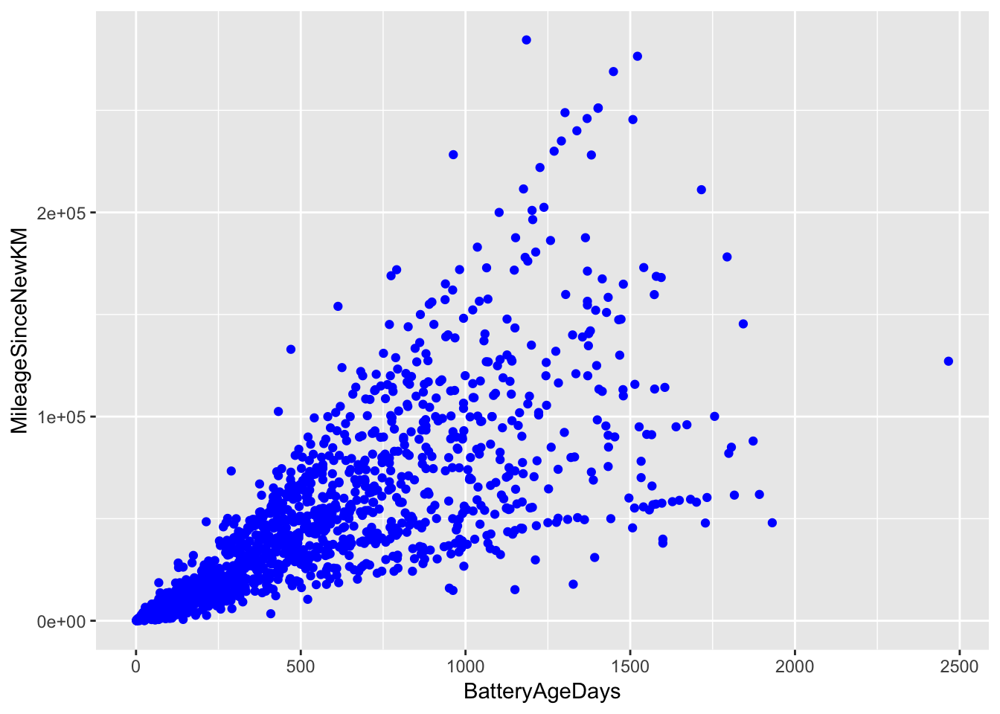
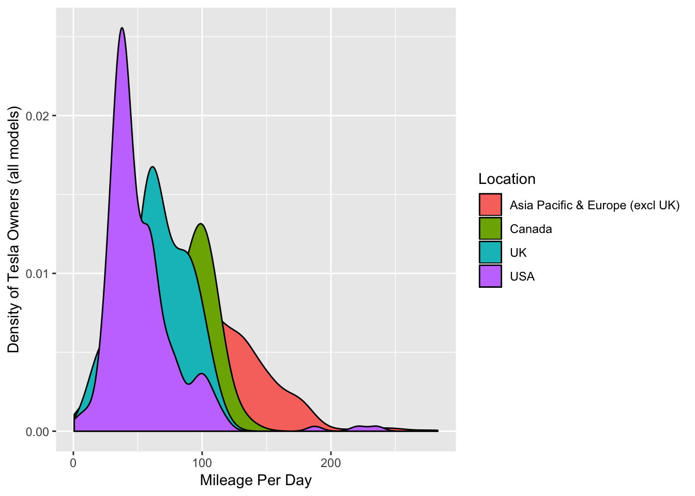

5 Data Visualization with ggplot2
5.1 What is a package?
Packages are collections of R functions, data, and compiled code in a well-defined format. The directory where packages are stored is called the library. R comes with a standard set of packages, called the base package. Others are available for download and installation. 
Packages that are curated, maintained, and reviewed are stored on the CRAN (Comprehensive R Archive Network). 
Once installed, packages have to be loaded into the session to use the functions stored within the package. 
If you ever need R to do something that is not obvious, there is probably a package for that. Many packages also provide vignettes or publish background and examples in the Journal of Statistical Software.
One of the more popular packages of packages is the tidyverse, which includes packages such as dplyr, ggplot2, and readr which make using R for data cleaning, graphics, and data science. We will explore a few of these packages today, starting with ggplot2 and the grammar of graphics.
5.2 The Grammar of Graphics
A data visualization is a set of visual geometries whose aesthetics are mapped from data.
5.2.1 Geometry
- A geometry is a visual entity in space.
- Some common geometries encountered in data visualizations:
- Point
- Line
- Bar
- Point
5.2.2 Aesthetics
- An aesthetic is a visual attribute of a geometry
- Common aesthetics:
- Position on horizontal (X)
- Position on vertical (Y)
- Shape
- Size
- Color
- Hue
- Saturation (“intensity”)
- Value (“brightness”)
- Hue
- Text
- Position on horizontal (X)
- Not all aesthetics are available for every geometry
5.2.3 Data
- To visualize, must have data in row-by-column format where:
- Rows represent cases: at most one geometry per case (assuming no aggregation)
- Columns represent variables: to be mapped to aesthetic attributes
- Rows represent cases: at most one geometry per case (assuming no aggregation)
- Differences in geometry aesthetics map to differences in data variables
- Available mappings depend on whether data variable is continuous (height) or discrete (race)
- The following caveats apply:
- An aesthetic attribute can be mapped back to at most one variable
- A variable can be mapped to more than one aesthetic
- Not all mappings make sense
- An aesthetic attribute can be mapped back to at most one variable
5.3 Package ggplot2
The package ggplot2 stands for grammar of graphic plots. It works to layer details onto a graphic map data to specific aesthetics using specific geometries. If you have not already done so, install the ggplot2 package.
install.packages("ggplot2")Open up the the R Notebook for Data Visualization with ggplot2 and follow along.
Now load the package into R using either library() or require()
library(ggplot2)Let’s make a graphic for the Tesla data:
tesla<-read.csv("Data/cleanTeslaBattery.csv")Your Turn 1 Talk in a group - what relationship do you expect to see in the tesla data between the age of the battery (Battery AgeDays) and the amount of mileage put on the car since the battery was installed (MileageSinceNewKM)? (No peeking!)
Run the following code in your notebook to make a graph, paying strict attention to spelling, capitalization, and parentheses.
ggplot(data=tesla) +
geom_point(mapping=aes(x=BatteryAgeDays, y=MileageSinceNewKM))
Notice a few key things.
ggplot(data)initializes the plot
- adding a
+after a line of ggplot code adds a new layer
- start with the geometry
- then specify the aesthetics
Here is a similar graphic code with annotation. 
Therefore, you can use this code template to make thousands of graphs with ggplot2.
ggplot(data = <DATA>) +
<GEOM_FUNCTION>(mapping = aes(<MAPPINGS>))Let’s add on some more layers! What if we want to make the variable Replacement Battery to a color aesthetic?
ggplot(data=tesla) +
geom_point(mapping=aes(x=BatteryAgeDays, y=MileageSinceNewKM, color=ReplacementBatt))
If we didn’t care about mapping the new variable to an aesthetic, but wanted to change the color, that would come outside of the aes() function.
ggplot(data=tesla) +
geom_point(mapping=aes(x=BatteryAgeDays, y=MileageSinceNewKM), color="blue")
There are a lot of resources available, including a the “ggplot2 Cheatsheet”
Your Turn 2 Make the following density plot, using the Cheatsheet to help you. What does the plot tell you about the Tesla driver habits in different regions?

5.3.1 Layering Graphics
To get a better idea about how ggplot2 layers aesthetics and and specific geometries onto a graphic, check out the ggplot flipbook which demonstrates how each layer modifies the graphic.
5.4 Additional Resources
There are a lot of resources for ggplot2, here are three good places to start:
The data visualisation and graphics for communication chapters in R for data science. R for data science is designed to give you a comprehensive introduction to the
tidyverse, and these two chapters will you get up to speed with the essentials ofggplot2as quickly as possible.If you’d like to take an online course, try Data Visualization in R With ggplot2 by Kara Woo.
If you want to dive into making common graphics as quickly as possible, I recommend The R Graphics Cookbook by Winston Chang. It provides a set of recipes to solve common graphics problems.
If you’ve mastered the basics and want to learn more, read ggplot2: Elegant Graphics for Data Analysis. It describes the theoretical underpinnings of ggplot2 and shows you how all the pieces fit together. This book helps you understand the theory that underpins ggplot2, and will help you create new types of graphics specifically tailored to your needs. The book is not available for free, but you can find the complete source for the book at https://github.com/hadley/ggplot2-book.